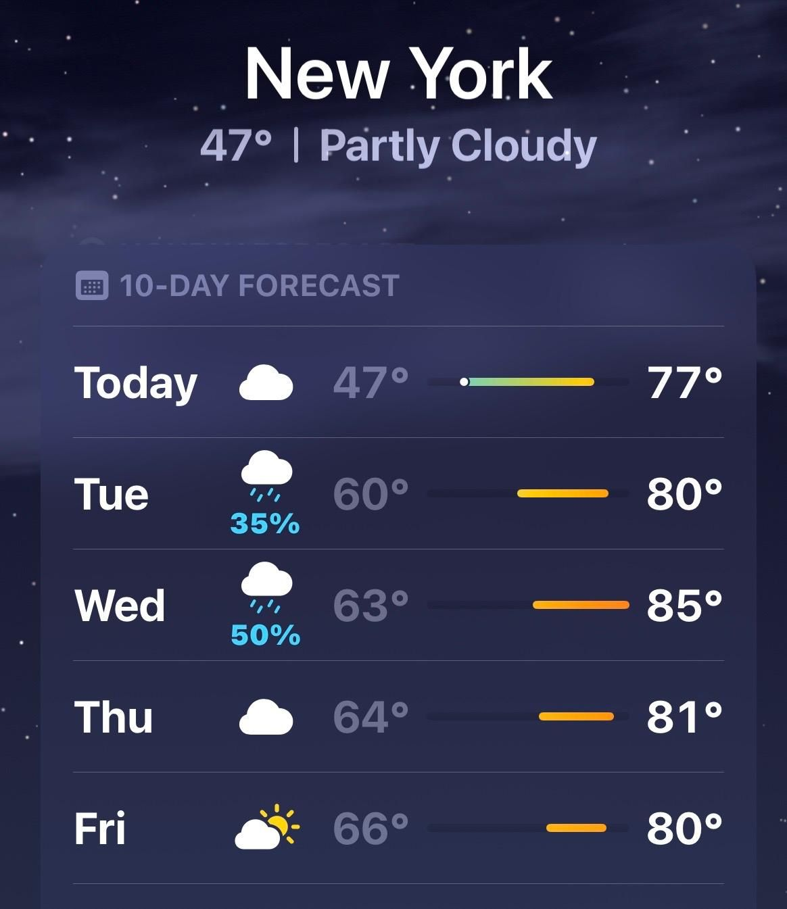

I checked the weather app this morning. 80 degrees this week. After a perfect 60 degree weekend.

And I can tell you exactly how every team meeting in the New York area will start today.
Someone hits unmute, looks at the camera, and goes: "Can you believe it's going to hit 80 this week?"
I'm not the only one who saw that coming. AI does it too.
It doesn't think. It just looks at everything that came before and predicts the next word. Then the next. Then the next.
Matthew Dicks in his book Storyworthy says weather talk is the death of good conversation. The enemy of the interesting.
And now I can't stop thinking about why.
We already know what's coming. The whole script. Nothing to discover. Nothing to feel.
As humans, our entire value is in being unpredictable. In saying the thing nobody saw coming.
Weather talk is the em dash of conversation.
You know the feeling. You're reading a post and there's an em dash every other sentence and something inside you quietly dies. You can't explain it. You just feel it.
That's what "can you believe this weather" does to the first 30 seconds of a Monday meeting.
The weekend was beautiful. Two days of actual life happened to all of us. Come Monday, bring something your peers can't predict.